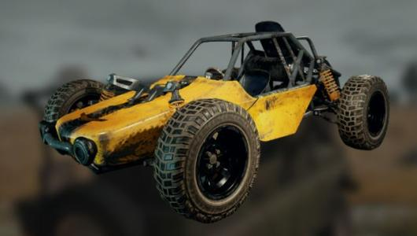

HMOE
JEEP
ARTISAN BAKERY LOGO
BOUNCY CAR
MOTORBIKE

Bouncy car
BOUNCY CAR(中文名：蹦蹦，又名，山蹦子)。 速度极快，快于吉普，但是比摩托车要慢。 车辆在行驶过程中非常容易翻车，或者原地急转，在被敌人追着打的时候，如果冲上坡，且一直加速， 那么落地之后就哦豁了。因为这样非常容易发生急转，导致车辆在原地打转。可以搭载一人，但是，搭载的人很容易受到伤害。 Q-Q!!!!